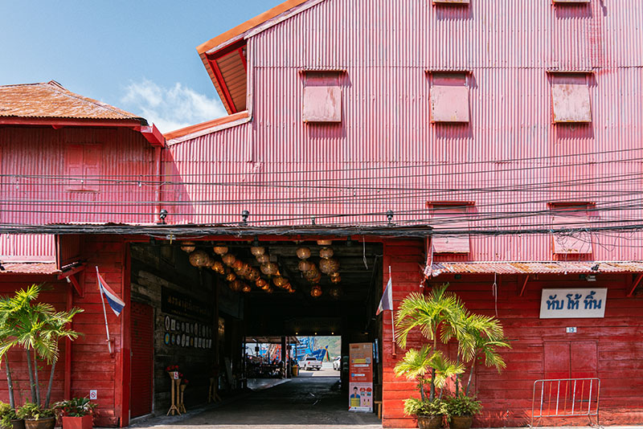

กินนอนนครใน
ทริปลงใต้เรียนรู้สงขลาผ่านการกินอาหาร เรียนรู้เรื่องเมืองที่มีหลากหลายวัฒนธรรม ไม่ใช่แค่อยู่ร่วมกัน แต่ยังมีความผสมผสานกันได้อย่างลงตัว แสดงออกมาเป็นอาหารที่มีความเฉพาะตัว

ชิมรสจีน
สงขลาเป็นเมืองที่คนจีนหลายเชื้อสายอพยพมาตั้งรกรากกันตั้งแต่อดีต บนถนนสายเดียวจะพบอาหารจีนหลากหลายแบบ ทั้งอาหารจีนแต้จิ๋วที่ใช้แต่ของในสงขลาเพื่อทำอาหารเท่านั้น สตูว์สูตรพ่อครัวชาวจีนที่เคยทำงานบนเรือฝรั่ง หรือสังขยาแบบไหหลำ
ชิมรสมุสลิม
ตั้งแต่อดีตสงขลาย้ายที่ตั้งของเมืองมาหลายครั้ง และมีชุมชนมุสลิมที่เหนียวแน่นอยู่ร่วมกันในทุกยุคทุกสมัย รวมถึง ‘บ้านบน’ ชุมชนมุสลิมในเขตเมืองสงขลาปัจจุบัน ที่มีวัฒนธรรมของพี่น้องชาวมุสลิม โดยเฉพาะอาหารอย่างโรตี น้ำชา และข้าวมันแกงไก่ ข้าวมันราดด้วยแกงไก่ใส่ออดิบ น้ำพริก และเครื่องประกอบจากทะเลอย่างปลาแห้งและกุ้งหวาน เป็นรสแบบมุสลิมแถบทะเลสาบสงขลา
ชิมรสชาติท้องทะเล
อาหารทะเลที่เพิ่งขึ้นมาจากทะเลไม่เกิน 5 ชั่วโมง ไม่ผ่านการแช่น้ำแข็งหรือใช้สารเคมี เป็นวิถีของชาวประมงพื้นบ้านแห่งหมู่บ้านสะกอม อำเภอจะนะ แบบดั้งเดิม รสชาติของท้องทะเลสดๆ จึงอัดแน่นอยู่ในกุ้ง หอย ปู ปลา ที่หามาได้ และยังได้มีโอกาสชิม ‘ข้าวดอกราย’ อาหารที่จะหากินได้เฉพาะหมู่บ้านสะกอมอีกด้วย